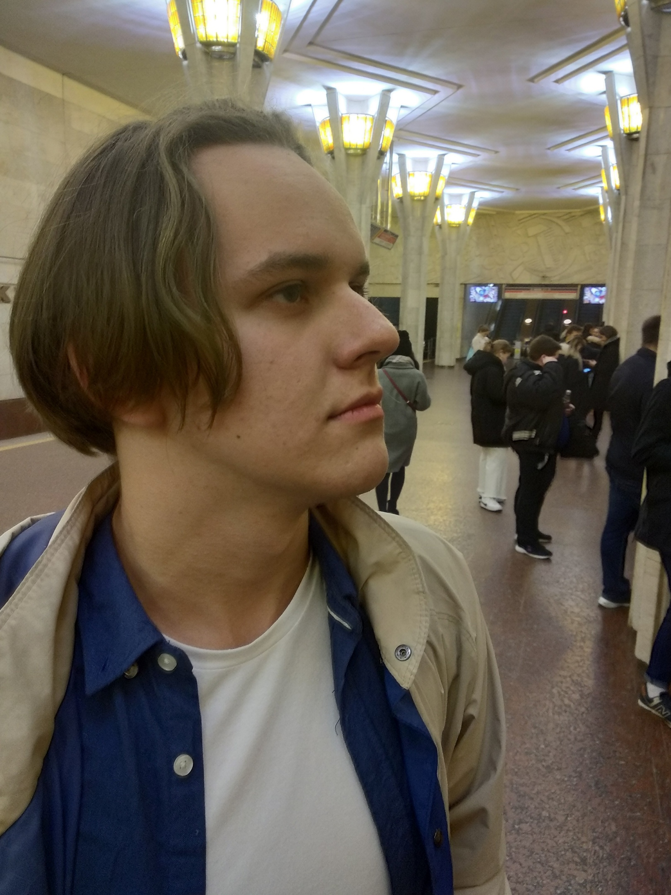

|  |
Dmitry Velkov+375(33)3411946 | velkov2000@list.ru | github Junior DeveloperI am interested in Front- and Back-end development. I want to learn more about software development, become a part of developers community and participate in some projects. My positive sides: teamwork skills, non-conflict, fast adaptation, self-study skill. My negative sides: meme addiction. Skills
ExperienceWriting a course project in UML. Topic of the project: Object-oriented analysis and software design. 2 months at the refrigerator factory.Education
|